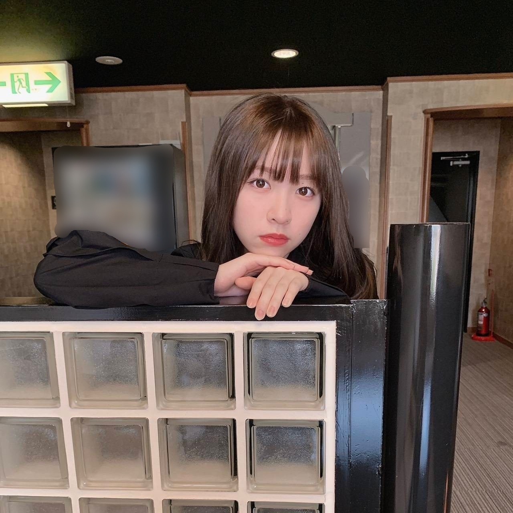
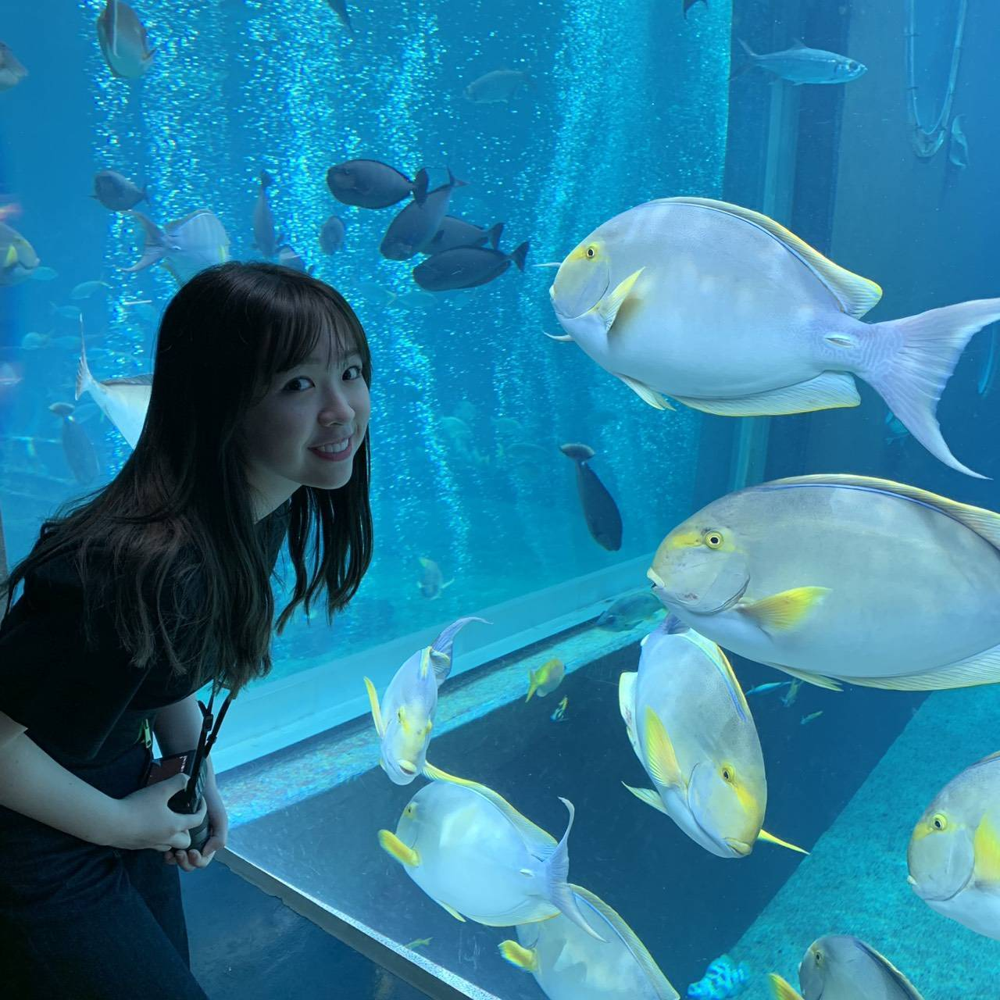
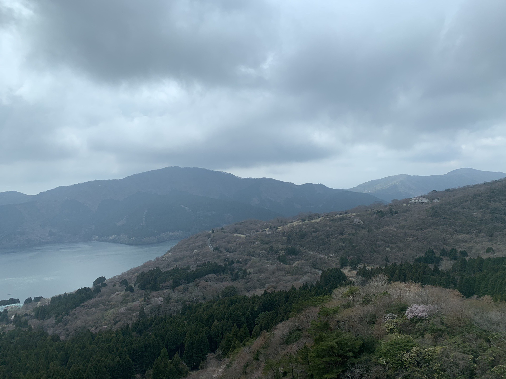
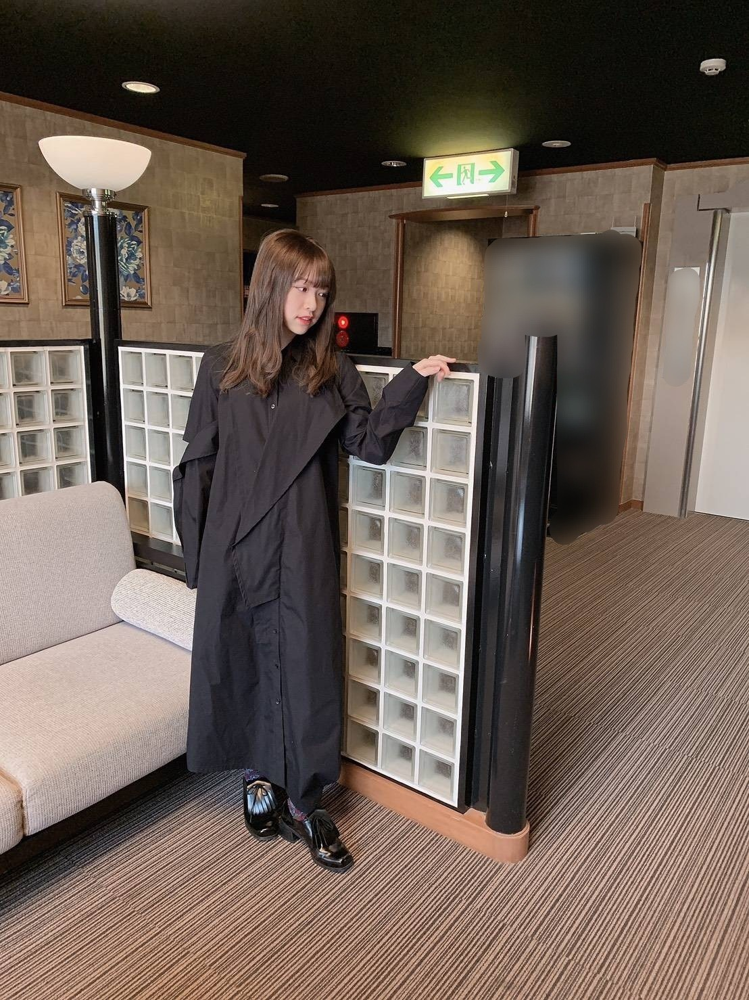
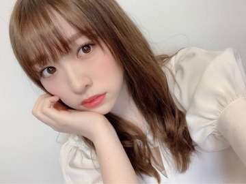
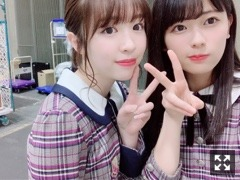
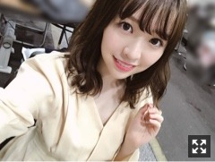
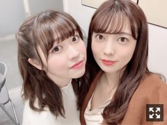
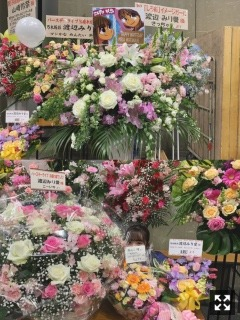

2019/0423Tue一言芳恩
先日、2日程お休みがあったので
久しぶりに家族旅行、箱根へ行って参りました

ハウスダストのおかげか、
顔のコンディションが整わなかったけれど。笑
庭園があったり小さな駅があったり
私の好きな雰囲気で凄く良かった！

私、本当に水族館が好きで
今回も家族に無理言って少し遠い水族館まで
連れて行ってもらいました
水族館が好き、というより
ウミガメ好きという感じですかね。
ウミガメもこの日見つけました！2匹いた！
私のカメラでしっかりと抑えました。
ウミガメを見る為に行っているようなもの。

曇っておりましたが、とても綺麗な景色でした

皆様は今まで行った中で
ここは良かったな〜ここは美味しかった！
という場所はありますか？
是非、教えて下さい(^ ^)
みり愛
2019/0418Thu柔和温順
こんばんは、渡辺です。
4期生のみんなが出演している舞台
「3人のプリンシパル」
たまちゃんと観劇して参りました！
ロミオとジュリエットは映画で見た事あり
とても好きな作品だったので
繋ぎ合わせながら楽しく見れました(^ ^)
4期生ちゃんにご挨拶する事が出来ました〜
瞳が潤んでいて可愛らしかった、、笑
私が逆に緊張してしまいました。笑
残りの公演、頑張ってね！
最近、とてもいい買い物が出来まして
気分がとても良いです。
4枚目アルバム「今が思い出になるまで」
発売中です！
そしてUTB+、MARQUEE共に発売中です！
そして更に
4月23日発売のBRODYにも出ております
2期生特集！有難いです。
私は絢音とペアでした〜銭湯で撮影しましたよ。
こちらも是非( ^ω^ )
甥っ子(小学校3年生)と2人きりの夢の国へ
何年振りだろう、、
私は夢の国に本当行かないタイプの人間なので
私の方が何だかうきうきしていました、笑
並んでいる間も甥っ子が飽きないように
ポップコーン買ってあげたり、
チュロス買ったり、ゲームさせたりして
お世話三昧でした。笑
乗り物乗るの初めてだったらしく
怖いだろうから「手繋ぐ？」と聞いたところ
丁重にお断りしてきて
私は焦りと共に悲しくなった(°▽°)
夕方から出向いたのですが、いや〜疲れた。笑
次はもう少し大きくなってからだね
1年振りの2期生会、楽しかった！
普段は全員で集合する事があんまりないけれど
たまに集まると本当にみんな仲良いなあと。
この場が凄く落ち着きます。
また来年も絶対集まりましょう。
みり愛
2019/0415Mon23rd
23枚目シングル、選抜に選んで頂きました
毎回選抜発表が苦手で、発表後には
やり場の無い気持ちをコントロールするのが
難しい日々もありました。
乃木坂46とし活動して6年経っておりますが、
乃木坂46に携わって頂いている関係者の方々に
沢山お世話になり、学ぶ事がありました。
1つ1つの会話や行動力。
その時は理解できなかった事が
19歳を境に段々と理解出来るように
なってきた気がしています。
これも少し大人になった証なのでしょうか。
中学生だった私も、もう20歳になる年です。
19歳から20歳に移りゆくこの年は
一番私にとって大事なのではないかなと、
だからこそもちろん今までもですが
より一層真剣にお仕事に取り組んでいきたいです
そして応援して下さっているファンの皆様。
いつも側にいてくださる事、
ペンライトや推しタオル、ライブでの声援、
握手会に足を運んで下さる事、
時には一緒に涙を流しながら笑いながら
それが本当に心地よくて素敵な時間。
そして素敵なお花、お手紙
私が今こうしてお仕事出来ているのも
紛れもなく皆様のおかげです
本当にありがとうございます
初心の気持ちを忘れずこれからも
より一層精進して参ります。

渡辺みり愛
2019/04/15 11:30｜個別ページ｜コメント(1265)
2019/0405Fri純真可憐
こんばんは。
名古屋での全国握手会、ペアは蓮加でした。
お越しいただいた皆様ありがとうございました！

蓮加とのペアは嬉しかったな〜
こんな事普段絶対言わないんだけどね。笑
蓮加が撮ってくれたよ〜
素敵なお花、ありがとうございました！
そして大阪での全国握手会は、まいちゅんと。
以前もペアになった事がありまして
2期生同士、凄く安心して出来ました〜
お花は時間の都合上撮る事が出来ませんでした
お花を下さったファンの皆様
本当に申し訳ないです、、
でもしっかり目に焼き付けておきました！
本当にありがとうございました。
かりんとゆっちゃんの卒業発表。
私は少し前から知ってはいましたが、
正直なところ物凄く寂しい。
かりんはね、風船は生きているの
ラスサビ前のみんなが私を囲んで
指を指すところがあるんだけど
私がそこの部分好きなのを知っているから
バースデーライブでも本当はそこの部分
移動でカットされちゃうはずだったんだけど
かりんがそこはやろうって言ってくれていた
みたいで(>_<)
そういうメンバー一人一人に対する気遣いが
物凄く行き渡ってて、
でもかりんにも焦って切羽詰まって
泣いている場面も見た事あるから、
かりんに全て頼っててはいけないなあと
思っていたり。
ゆっちゃんは初期の頃から
二人でご飯に何回か行ったりする仲で
( 知らなかったでしょう？ )
幼かったのに可愛がってくれて
面白くて優しい方です。
ゆっちゃんがいると周りの子が
自然と笑っている事が多く
それはゆっちゃんの才能なのかなあと
見ていて羨ましくなりました。
そんな二人が卒業を発表して
悲しいけどそれが二人の選択した道だから
二人がいつも笑顔の様に
私も二人を笑顔で送れたらいいなあと
思っています(^ ^)
みり愛
2019/0320Wedゴルゴンゾーラ
こんばんは。

幕張での全国握手会、
そして名古屋での個別握手会
共にお越し下さった皆様ありがとうございました
全握ではゆっちゃんとペアでした

日常フルで踊れて気持ち良かった〜。
個別握手会は
1.2部が1枚目のクリーム色のワンピース
3.4部
青のロングワンピース
色合い、生地感共にお気に入りです
5部
珍しく紫のようなピンクのような服

色とりどりのお花が本当に好きです
私のレーンに飾られるお花は
決まった色ではなくいつも色とりどりで
レーンを鮮やかにして下さっていて
それがとても嬉しく、お気に入りです。
シックな花の色の時もあれば
今回は可愛らしいお花が沢山でした。
毎度毎度新鮮で嬉しいです
お花を下さった皆様、ありがとうございます！
そしてみさ先輩の卒業ソロコンサートに
最後メンバーみんなで登場させて頂きました！
ドレス姿のみさ先輩、とっても素敵でした。
ここには書ききれない程、
沢山お世話になりました
みさ先輩と2人でお仕事する機会も何回かあって
それを歌いながら思い出していました、、
本当に、お疲れ様でした。
告知
○EX大衆 発売中
明日は名古屋で皆さんにお会いできますね
蓮加が「一緒ですね〜」って言ってくっ付いてくる
私は「はいはい」って言ってあしらうけど
本当は私も凄く嬉しい。笑
そして週末にはイベントもあります！
楽しみが満載。
みり愛